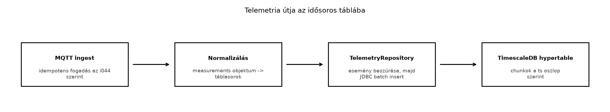

A ts-backend az Ingest: MQTT-ből a backendbe, idempotensen alfejezetben már beérkező üzenetenként feldolgozza a TerraSense telemetriát, de ez önmagában kevés: a méréseket úgy kell tárolni, hogy a későbbi lekérdezések ne lassuljanak le a több millió soros tábla növekedésével. Egy hagyományos PostgreSQL-tábla eleinte működik, de az idő szerinti szűrés, az óránkénti átlag, a percenként beérkező ezres írási sebesség és a hosszú megőrzési idő hamar szétfeszíti a naiv megoldást. Az üvegházakban elhelyezett szenzorok folyamatosan küldenek adatot; ha a rendszer nem skálázódik, a dashboard lassú lesz, a riasztások késnek, és a tárolási költség megnő.
Ez az alfejezet azt mutatja be, hogyan tervezzük meg a TerraSense
mérések idősoros tábláit, hogy a TimescaleDB hatékonyan kezelje az
írásintenzív terhelést, az időablakos lekérdezéseket és az eszközönkénti
utolsó értékeket. A 15.1-ben létrehozott fogadótáblát verziózott
migrációval alakítjuk át: a nyers eseményeket
telemetry_ingest néven megtartjuk az idempotencia és az
audit számára, a méréseket pedig hosszú formátumú hypertable-be
írjuk.
Definíció. Az idősoros adat olyan rekord, amelyben minden sorhoz egy időbélyeg tartozik, és a lekérdezések dominánsan időintervallumokra, sorrendre, csúcsértékre vagy aggregált értékre vonatkoznak. Az IoT-mérések tipikus idősoros adatok: a hőmérsékletet, páratartalmat és talajnedvességet időpontonként rögzítjük, és a kérdés gyakran az, hogy „mi volt az átlaghőmérséklet az elmúlt 24 órában” vagy „mikor lépte át utoljára a 30 °C-ot”.
Definíció. A TimescaleDB a PostgreSQL egy kiterjesztése, amely egy hagyományos táblából ún. hypertable-t hoz létre. A hypertable-t a TimescaleDB automatikusan kisebb, idő szerint particionált részekre (chunk) bontja, miközben a felhasználó továbbra is szabványos SQL-lekérdezéseket ír. A particionálás gyorsítja az időablakos szűrést, a tömörítést és a későbbi adatmegőrzési műveleteket.
A TimescaleDB-ben a hypertable-t jellemzően az eseményidő oszlopra
hozzuk létre. A ts oszlop tehát nem csak egy mező, hanem a
tárolás elsődleges szerveződési tengelye. A beérkező üzenetek az
append-only jelleget követik: ritkán frissítünk, gyakran szúrunk be, a
múltbeli adatot inkább tömörítjük vagy ritkítjuk.
A TerraSense telemetria a Adatformátumok: JSON,
CBOR, Protocol Buffers, SenML alfejezetben véglegesített séma
szerint egy measurements objektumot tartalmaz, amelynek
kulcsai a méréstípusok. Egyetlen MQTT-üzenet tehát több mérést is
hozhat:
{
"schema_version": 1,
"node_id": "n001",
"seq": 42,
"ts": 1735689600000,
"boot_id": "boot-1",
"measurements": {
"temperature": {"value": 22.5, "unit": "Cel", "valid": true},
"humidity": {"value": 60.2, "unit": "%RH", "valid": true},
"soil_moisture": {"value": 35.0, "unit": "%", "valid": true}
}
}Ebből a normalizálás három táblasort készít. A ts értéke
epoch ms UTC, amit az adatbázisban timestamptz típusra
alakítunk. Emellett tároljuk a server_ts feldolgozási időt
is, hogy később vizsgálható legyen a hálózati késleltetés vagy a gateway
offline pufferelésének hatása.

Az ábrán látható folyamatban a TelemetryRepository
először a telemetry_ingest eseménytáblába próbálja beszúrni
az üzenetet az (site, node_id, boot_id, seq) kulccsal. Ha
ez az esemény még nem létezett, akkor írja be a méréseket a
telemetry hypertable-be, kötegelt beszúrással: nem
soronként, hanem néhány száz elemű batch-ekben, így csökken a hálózati
és tranzakciós overhead. A két művelet ugyanabban a tranzakcióban
fut.
Az idősoros tároló kiválasztásakor a TerraSense esetében a TimescaleDB mellett az InfluxDB a leggyakrabban felmerülő alternatíva.
| Szempont | TimescaleDB | InfluxDB |
|---|---|---|
| Adatmodell | PostgreSQL-táblák, SQL | saját adatmodell, bucket/measurement/tag/field |
| Lekérdezési nyelv | SQL, PostgreSQL-ökoszisztéma | InfluxQL vagy Flux (verziófüggő) |
| Tranzakciók | teljes ACID a PostgreSQL miatt | korlátozottabb |
| Üzemeltetés | meglévő PostgreSQL-ismeret előny | külön motor, saját működtetés |
| Skálázás | vertikális + kiterjesztések, chunkok | elosztott klaszterezés lehetősége |
| Integráció | Spring JDBC/JPA egyszerű | saját kliens vagy API |
A TerraSense-ben a TimescaleDB-t választjuk, mert a ts-backend Java/Spring környezetben amúgy is PostgreSQL felé integrál, a csapat ismeri az SQL-t, és a TimescaleDB a mérési adatok mellett az eszköznyilvántartást is ugyanabban az adatbázisban tarthatja. Az InfluxDB erős versenyző, ha nagy elosztott klaszterre vagy speciális idősoros funkciókra van szükség, de jelen üvegházas méretben a bevált PostgreSQL-alap a fontosabb. A pontos verzió- és funkcióösszevetést a telepített TimescaleDB- és InfluxDB-verzió dokumentációjában ellenőrizni kell.
Az adatmodell tervezésénél két fő forma van:
temperature, humidity,
soil_moisture). Előnye, hogy egy sor egy időpontot ír le,
és a lekérdezés egyszerű. Hátránya, hogy új szenzortípus esetén
sémamódosítás kell, és a hiányzó mérések NULL-okat szülnek.measurement_type és
egy value oszlop van, minden mérés egy sor. Előnye a
rugalmasság és az idősoros indexelés hatékonysága. Hátránya, hogy egy
eszköz időpillanatnyi állapotának összeállítása több sor egyesítését
igényli.A TerraSense a hosszú táblát választja, mert a telemetria JSON
kanonikus measurements objektuma méréstípusonként egy-egy
bejegyzést tartalmaz, és a jövőben új mérések (például
széndioxid-koncentráció) séma-módosítás nélkül illeszthetők be. A
site és node_id címkeként (label), a
measurement_type és value pedig mérésként
(metric) viselkedik. Az eseményszintű azonosítást nem a hosszú tábla
egyedi kulcsa, hanem a külön telemetry_ingest eseménytábla
végzi: így az ugyanazon esemény eltérő ts-sel történő
visszajátszása sem hoz létre új méréssorokat.
A 15.1-ben a telemetry tábla még a nyers, kanonikus
JSON-payloadot tárolta (site, node_id, boot_id, seq)
kulccsal. Ebben az alfejezetben ezt a táblát
telemetry_ingest néven megtartjuk, és létrehozzuk mellette
a hosszú formátumú telemetry hypertable-t. A két tábla
szerepe:
telemetry_ingest: eseményszintű deduplikáció és audit;
egy MQTT-üzenet egy sor, a kanonikus JSON-payloadtal.telemetry: mérésszintű idősoros adat; egy MQTT-üzenet
annyi sor, ahány mérés van benne.A végleges táblaséma:
CREATE EXTENSION IF NOT EXISTS timescaledb;
CREATE TABLE IF NOT EXISTS telemetry_ingest (
site text NOT NULL,
node_id text NOT NULL,
boot_id text NOT NULL DEFAULT 'boot-0',
seq bigint NOT NULL,
received_at timestamptz NOT NULL DEFAULT now(),
ts bigint NOT NULL,
schema_version integer NOT NULL,
payload jsonb NOT NULL,
PRIMARY KEY (site, node_id, boot_id, seq)
);
CREATE TABLE IF NOT EXISTS telemetry (
server_ts timestamptz NOT NULL DEFAULT now(),
ts timestamptz NOT NULL,
site text NOT NULL,
node_id text NOT NULL,
seq bigint NOT NULL,
boot_id text NOT NULL DEFAULT 'boot-0',
schema_version integer NOT NULL,
measurement_type text NOT NULL,
value double precision NOT NULL,
unit text,
valid boolean NOT NULL DEFAULT true,
UNIQUE (site, node_id, boot_id, seq, measurement_type, ts)
);
SELECT create_hypertable('telemetry', 'ts',
if_not_exists => TRUE,
chunk_time_interval => interval '7 days');
CREATE INDEX IF NOT EXISTS telemetry_site_node_type_ts_idx
ON telemetry (site, node_id, measurement_type, ts DESC);A telemetry_ingest elsődleges kulcsa a
(site, node_id, boot_id, seq) eseménykulcs. A
telemetry egyedi kényszere a
(site, node_id, boot_id, seq, measurement_type, ts) hatos,
amely tartalmazza a hypertable partíciós oszlopát (ts), így
a TimescaleDB elfogadja. A ts bevonása a mérési sor
kulcsába azért szükséges, mert a TimescaleDB minden egyedi indexben
megköveteli a partíciós oszlopot; az eseményszintű deduplikációt viszont
nem ez a kulcs, hanem a telemetry_ingest végzi. Ez a
szétválasztás akkor is véd, ha az esemény ismételt küldésekor a
ts megváltozik: a telemetry_ingest ütközése
miatt a repository nem ír új méréssorokat.
Továbbvitt eredmény. Ez a telemetry
táblaszerkezet, a
(site, node_id, boot_id, seq, measurement_type, ts) egyedi
kulcs, a telemetry_ingest eseménytábla és a
hypertable particionálás a Megőrzés,
ritkítás és tárolási költség alapját adja. Ugyanezt a táblát
használja a Dashboardok Grafanával a grafikonok
mögötti lekérdezésekhez, és a Záróprojekt: a teljes
TerraSense rendszer összeállítása és átvétele a végleges
adatrétegként.
A beszúrást a Spring JdbcTemplate kötegelt API-jával
végezzük. Az alábbi repository a 15.1-es DTO-t használja, de már a két
táblába ír, egy tranzakcióban:
package com.terrasense.backend;
import com.fasterxml.jackson.core.JsonProcessingException;
import com.fasterxml.jackson.databind.ObjectMapper;
import java.sql.Timestamp;
import java.time.Instant;
import java.util.ArrayList;
import java.util.LinkedHashMap;
import java.util.List;
import java.util.Map;
import org.springframework.jdbc.core.JdbcTemplate;
import org.springframework.stereotype.Repository;
import org.springframework.transaction.annotation.Transactional;
@Repository
public class TelemetryRepository {
public enum IngestOutcome {
INSERTED, DUPLICATE, CONTENT_MISMATCH
}
private final JdbcTemplate jdbc;
private final ObjectMapper objectMapper;
public TelemetryRepository(JdbcTemplate jdbc, ObjectMapper objectMapper) {
this.jdbc = jdbc;
this.objectMapper = objectMapper;
}
@Transactional
public IngestOutcome insertIfAbsent(String site, TelemetryMessage message, String topic) {
String canonicalJson = canonicalJson(message);
int inserted = jdbc.update("""
INSERT INTO telemetry_ingest
(site, node_id, boot_id, seq, received_at, ts, schema_version, payload)
VALUES (?, ?, ?, ?, now(), ?, ?, ?::jsonb)
ON CONFLICT (site, node_id, boot_id, seq) DO NOTHING
""",
site,
message.node_id(),
message.effectiveBootId(),
message.seq(),
message.ts(),
message.effectiveSchemaVersion(),
canonicalJson);
if (inserted == 0) {
Boolean same = jdbc.queryForObject("""
SELECT (payload = ?::jsonb AND ts = ? AND schema_version = ?)
FROM telemetry_ingest
WHERE site = ? AND node_id = ? AND boot_id = ? AND seq = ?
""",
Boolean.class,
canonicalJson,
message.ts(),
message.effectiveSchemaVersion(),
site,
message.node_id(),
message.effectiveBootId(),
message.seq());
if (Boolean.TRUE.equals(same)) {
return IngestOutcome.DUPLICATE;
}
insertDeadLetter(topic, canonicalJson,
"eltérő tartalom ugyanarra az eseménykulcsra");
return IngestOutcome.CONTENT_MISMATCH;
}
List<TelemetryRow> rows = toRows(site, message);
jdbc.batchUpdate("""
INSERT INTO telemetry
(server_ts, ts, site, node_id, seq, boot_id,
schema_version, measurement_type, value, unit, valid)
VALUES (now(), ?, ?, ?, ?, ?, ?, ?, ?, ?, ?)
ON CONFLICT (site, node_id, boot_id, seq, measurement_type, ts)
DO NOTHING
""", rows, 500, (ps, row) -> {
ps.setTimestamp(1, Timestamp.from(Instant.ofEpochMilli(row.tsEpochMs())));
ps.setString(2, row.site());
ps.setString(3, row.nodeId());
ps.setLong(4, row.seq());
ps.setString(5, row.bootId());
ps.setInt(6, row.schemaVersion());
ps.setString(7, row.measurementType());
ps.setDouble(8, row.value());
ps.setString(9, row.unit());
ps.setBoolean(10, row.valid());
});
return IngestOutcome.INSERTED;
}
public void insertDeadLetter(String topic, String payload, String reason) {
jdbc.update("""
INSERT INTO dead_letter (topic, payload, reason, received_at)
VALUES (?, ?, ?, now())
""", topic, payload, reason);
}
private List<TelemetryRow> toRows(String site, TelemetryMessage message) {
List<TelemetryRow> rows = new ArrayList<>();
for (Map.Entry<String, Measurement> entry : message.normalizedMeasurements().entrySet()) {
Measurement measurement = entry.getValue();
rows.add(new TelemetryRow(
message.ts(),
site,
message.node_id(),
message.seq(),
message.effectiveBootId(),
message.effectiveSchemaVersion(),
entry.getKey(),
measurement.value(),
measurement.unit(),
Boolean.TRUE.equals(measurement.valid())));
}
return rows;
}
private String canonicalJson(TelemetryMessage message) {
Map<String, Object> canonical = new LinkedHashMap<>();
canonical.put("schema_version", message.effectiveSchemaVersion());
canonical.put("node_id", message.node_id());
canonical.put("seq", message.seq());
canonical.put("ts", message.ts());
canonical.put("boot_id", message.effectiveBootId());
canonical.put("measurements", message.normalizedMeasurements());
try {
return objectMapper.writeValueAsString(canonical);
} catch (JsonProcessingException e) {
throw new IllegalStateException("A kanonikus payload nem szerializálható", e);
}
}
}A TelemetryRow egy külön rekord, amely a normalizált
mérési sort írja le:
package com.terrasense.backend;
public record TelemetryRow(
long tsEpochMs,
String site,
String nodeId,
long seq,
String bootId,
int schemaVersion,
String measurementType,
double value,
String unit,
boolean valid
) {}A batchUpdate 500 soronként fűz ki egy adagot, és a
JDBC-driver általában ezt egyetlen round-tripben küldi. A
TelemetryRow rekord mezői pontosan a telemetry
tábla oszlopainak felelnek meg, a ts kivételével, amelyet a
Java oldal Instant.ofEpochMilli-vel alakít
Timestamp-re.
A fenti konkrét JSON-üzenetből a repository három sort hoz létre, például:
| site | node_id | seq | boot_id | ts | measurement_type | value | unit | valid |
|---|---|---|---|---|---|---|---|---|
| gh1 | n001 | 42 | boot-1 | 2025-01-01 00:00:00+00 | temperature | 22.5 | Cel | true |
| gh1 | n001 | 42 | boot-1 | 2025-01-01 00:00:00+00 | humidity | 60.2 | %RH | true |
| gh1 | n001 | 42 | boot-1 | 2025-01-01 00:00:00+00 | soil_moisture | 35.0 | % | true |
Az időbélyeg 1735689600000 ms, ami
2025-01-01T00:00:00Z-nek felel meg.
A 15.1-ben létrehozott adatbázis frissítéséhez nem elegendő a
schema.sql kicserélése: a meglévő telemetry
táblát át kell nevezni, az új hypertable-t létre kell hozni, és a
korábbi JSON-payloadokból ki kell nyerni a méréssorokat. A migrációt egy
verziózott SQL-fájl tartalmazza, amelyet a backend újraindítása előtt
egyszer kell lefuttatni:
-- ~/iot-labor/i045/02_normalized_telemetry.sql
BEGIN;
CREATE TABLE IF NOT EXISTS schema_migration (
version integer PRIMARY KEY,
description text NOT NULL,
applied_at timestamptz NOT NULL DEFAULT now()
);
DO $$
BEGIN
IF to_regclass('public.telemetry') IS NULL THEN
RAISE EXCEPTION 'Hiányzik a 15.1 telemetry tábla; előbb futtasd a 15.1 labort.';
END IF;
IF to_regclass('public.telemetry_ingest') IS NULL THEN
ALTER TABLE telemetry RENAME TO telemetry_ingest;
END IF;
END $$;
CREATE TABLE IF NOT EXISTS telemetry (
server_ts timestamptz NOT NULL DEFAULT now(),
ts timestamptz NOT NULL,
site text NOT NULL,
node_id text NOT NULL,
seq bigint NOT NULL,
boot_id text NOT NULL DEFAULT 'boot-0',
schema_version integer NOT NULL,
measurement_type text NOT NULL,
value double precision NOT NULL,
unit text,
valid boolean NOT NULL DEFAULT true,
UNIQUE (site, node_id, boot_id, seq, measurement_type, ts)
);
SELECT create_hypertable('telemetry', 'ts',
if_not_exists => TRUE,
chunk_time_interval => interval '7 days');
CREATE INDEX IF NOT EXISTS telemetry_site_node_type_ts_idx
ON telemetry (site, node_id, measurement_type, ts DESC);
INSERT INTO telemetry
(server_ts, ts, site, node_id, seq, boot_id, schema_version,
measurement_type, value, unit, valid)
SELECT i.received_at,
to_timestamp(i.ts / 1000.0),
i.site,
i.node_id,
i.seq,
i.boot_id,
i.schema_version,
m.key,
(m.value ->> 'value')::double precision,
m.value ->> 'unit',
coalesce((m.value ->> 'valid')::boolean, true)
FROM telemetry_ingest i
CROSS JOIN LATERAL jsonb_each(i.payload -> 'measurements') AS m(key, value)
WHERE i.payload ? 'measurements'
ON CONFLICT (site, node_id, boot_id, seq, measurement_type, ts) DO NOTHING;
INSERT INTO schema_migration (version, description)
VALUES (2, 'normalized telemetry and event dedup table')
ON CONFLICT (version) DO NOTHING;
COMMIT;A migráció feltételezi, hogy a 15.1-es telemetry tábla a
kanonikus payload oszloppal létezik. A DO
blokk csak akkor nevezi át a táblát, ha a telemetry_ingest
még nem létezik; így a migráció újrafuttatása nem nevezi át kétszer a
táblát. A backfill a JSONB jsonb_each függvényével bontja
ki a measurements objektumot, és a méréseket a hosszú
táblába írja. A WHERE i.payload ? 'measurements' feltétel
kihagyja azokat a régi sorokat, amelyek nem kanonikus payloadot
tartalmaznak; ezeket a migráció után kézzel kell átnézni. A
schema_migration tábla naplózza, hogy a 2-es verziójú
migráció lefutott.
A migráció után a backend src/main/resources/schema.sql
fájlját is a végleges sémára kell cserélni, különben a
spring.sql.init.mode: always a következő indításkor újra a
régi telemetry táblát próbálná létrehozni. A végleges
schema.sql:
CREATE EXTENSION IF NOT EXISTS timescaledb;
CREATE TABLE IF NOT EXISTS telemetry_ingest (
site text NOT NULL,
node_id text NOT NULL,
boot_id text NOT NULL DEFAULT 'boot-0',
seq bigint NOT NULL,
received_at timestamptz NOT NULL DEFAULT now(),
ts bigint NOT NULL,
schema_version integer NOT NULL,
payload jsonb NOT NULL,
PRIMARY KEY (site, node_id, boot_id, seq)
);
CREATE TABLE IF NOT EXISTS telemetry (
server_ts timestamptz NOT NULL DEFAULT now(),
ts timestamptz NOT NULL,
site text NOT NULL,
node_id text NOT NULL,
seq bigint NOT NULL,
boot_id text NOT NULL DEFAULT 'boot-0',
schema_version integer NOT NULL,
measurement_type text NOT NULL,
value double precision NOT NULL,
unit text,
valid boolean NOT NULL DEFAULT true,
UNIQUE (site, node_id, boot_id, seq, measurement_type, ts)
);
SELECT create_hypertable('telemetry', 'ts',
if_not_exists => TRUE,
chunk_time_interval => interval '7 days');
CREATE INDEX IF NOT EXISTS telemetry_site_node_type_ts_idx
ON telemetry (site, node_id, measurement_type, ts DESC);
CREATE TABLE IF NOT EXISTS dead_letter (
id bigserial PRIMARY KEY,
topic text NOT NULL,
payload text NOT NULL,
reason text,
received_at timestamptz NOT NULL DEFAULT now()
);A dead_letter tábla a 15.1-ből változatlanul megmarad; a
fenti schema.sql a teljes, friss telepítéshez is
használható, de a meglévő 15.1-es adatbázison előbb a migrációt kell
lefuttatni. A migráció és a schema.sql együtt biztosítja,
hogy a 15.1-ből induló adatbázis frissítése után a telemetria
folyamatosan beérkezzen: a repository ugyanazt a DTO-t kapja, de már a
telemetry_ingest és a telemetry táblába
ír.
Munkakönyvtár:
mkdir -p ~/iot-labor/i045 && cd ~/iot-labor/i045Előfeltétel: a Ingest: MQTT-ből a backendbe, idempotensen laborban elkészített ingest és a Adatformátumok: JSON, CBOR, Protocol Buffers, SenML alfejezetben elfogadott telemetria-séma.
A 15.1-ben a közös ~/iot-labor/stack/compose.yaml már
tartalmazza a lab-timescaledb szolgáltatást a
terra felhasználóval, a lab-password jelszóval
és a terrasense adatbázissal. Ebben az alfejezetben
nem hozunk létre új adatbázis-szolgáltatást, mert az
ugyanarra az 5432-es hostportra publikálva portütközést és rejtett
adatbázisváltást okozna. A meglévő szolgáltatást használjuk;
ellenőrizzük, hogy a stackben csak egy 5432-es publikáció van:
docker compose -f ~/iot-labor/stack/compose.yaml config | grep -n "5432"
docker compose -f ~/iot-labor/stack/compose.yaml psA szolgáltatás referenciaként a következő (ez már a 15.1-ben szerepel):
lab-timescaledb:
image: timescale/timescaledb:2.17.2-pg16
container_name: lab-timescaledb
environment:
POSTGRES_USER: terra
POSTGRES_PASSWORD: lab-password
POSTGRES_DB: terrasense
ports:
- "5432:5432"
volumes:
- lab-timescaledb-data:/var/lib/postgresql/data
healthcheck:
test: ["CMD-SHELL", "pg_isready -U terra -d terrasense"]
interval: 10s
timeout: 5s
retries: 5A volumes: szekcióban a kötet explicit nevet kap, hogy a
takarításnál ne kelljen a Compose projektelőtagjával számolni:
volumes:
lab-timescaledb-data:
name: lab-timescaledb-dataA jelszó kizárólag a helyi laborhoz használt, nem éles környezetbe
való. Ha a 15.1-es stackben még szerepel egy korábbi
postgres szolgáltatás, azt ne indítsuk el, és a
ts-backend SPRING_DATASOURCE_URL értéke a
lab-timescaledb szolgáltatásnévre mutasson. A 15.1 laborban
ezt már így állítottuk be.
Indítsuk el a szolgáltatást:
docker compose -f ~/iot-labor/stack/compose.yaml up -d lab-timescaledbMásoljuk be a migrációt a labor könyvtárába, és futtassuk a 15.1-es adatbázison:
docker compose -f ~/iot-labor/stack/compose.yaml exec -T lab-timescaledb \
psql -U terra -d terrasense -v ON_ERROR_STOP=1 < 02_normalized_telemetry.sqlA migráció után ellenőrizzük a táblákat és az átvitt sorok számát:
SELECT hypertable_name, num_chunks
FROM timescaledb_information.hypertables
WHERE hypertable_name = 'telemetry';
SELECT count(*) AS event_rows FROM telemetry_ingest;
SELECT count(*) AS measurement_rows FROM telemetry;A measurement_rows értéke a 15.1-ben fogadott események
méréseinek összege; ha a 15.1 laborban nem küldtünk üzenetet, mindkét
érték nulla. Ez nem hiba: a migráció a meglévő adatokat viszi át, az új
üzeneteket pedig a frissített repository írja.
Ezután írjuk meg a ~/iot-labor/i045/schema.sql fájlt a
fenti végleges sémával (a friss telepítéshez), a seed.sql
fájlt a tesztadatokkal, és a queries.sql fájlt a
lekérdezésekkel. A seed a 15.1-es migráció után is futtatható, mert a
telemetry tábla már a hosszú formátumot használja:
-- ~/iot-labor/i045/seed.sql
SET TIME ZONE 'UTC';
INSERT INTO telemetry_ingest
(site, node_id, boot_id, seq, received_at, ts, schema_version, payload)
VALUES
('gh1', 'n001', 'boot-1', 42, now(), 1735689600000, 1,
'{"schema_version":1,"node_id":"n001","seq":42,"ts":1735689600000,"boot_id":"boot-1","measurements":{"temperature":{"value":22.5,"unit":"Cel","valid":true},"humidity":{"value":60.2,"unit":"%RH","valid":true},"soil_moisture":{"value":35.0,"unit":"%","valid":true}}}'::jsonb),
('gh1', 'n001', 'boot-1', 43, now(), 1735689900000, 1,
'{"schema_version":1,"node_id":"n001","seq":43,"ts":1735689900000,"boot_id":"boot-1","measurements":{"temperature":{"value":22.8,"unit":"Cel","valid":true}}}'::jsonb),
('gh1', 'n001', 'boot-1', 44, now(), 1735690200000, 1,
'{"schema_version":1,"node_id":"n001","seq":44,"ts":1735690200000,"boot_id":"boot-1","measurements":{"temperature":{"value":23.1,"unit":"Cel","valid":true}}}'::jsonb),
('gh1', 'n001', 'boot-1', 45, now(), 1735690500000, 1,
'{"schema_version":1,"node_id":"n001","seq":45,"ts":1735690500000,"boot_id":"boot-1","measurements":{"temperature":{"value":22.9,"unit":"Cel","valid":true}}}'::jsonb)
ON CONFLICT (site, node_id, boot_id, seq) DO NOTHING;
INSERT INTO telemetry
(ts, site, node_id, seq, boot_id, schema_version,
measurement_type, value, unit, valid)
VALUES
(to_timestamp(1735689600.0), 'gh1', 'n001', 42, 'boot-1', 1,
'temperature', 22.5, 'Cel', true),
(to_timestamp(1735689600.0), 'gh1', 'n001', 42, 'boot-1', 1,
'humidity', 60.2, '%RH', true),
(to_timestamp(1735689600.0), 'gh1', 'n001', 42, 'boot-1', 1,
'soil_moisture', 35.0, '%', true),
(to_timestamp(1735689900.0), 'gh1', 'n001', 43, 'boot-1', 1,
'temperature', 22.8, 'Cel', true),
(to_timestamp(1735690200.0), 'gh1', 'n001', 44, 'boot-1', 1,
'temperature', 23.1, 'Cel', true),
(to_timestamp(1735690500.0), 'gh1', 'n001', 45, 'boot-1', 1,
'temperature', 22.9, 'Cel', true)
ON CONFLICT (site, node_id, boot_id, seq, measurement_type, ts) DO NOTHING;A seed.sql bejátszása után futtassuk a
~/iot-labor/i045/queries.sql lekérdezéseit:
-- ~/iot-labor/i045/queries.sql
SET TIME ZONE 'UTC';
-- 1) óránkénti átlaghőmérséklet az n001 eszközre
SELECT time_bucket('1 hour', ts) AS bucket,
round(avg(value)::numeric, 2) AS avg_temp,
count(*) AS sample_count
FROM telemetry
WHERE site = 'gh1'
AND node_id = 'n001'
AND measurement_type = 'temperature'
GROUP BY bucket
ORDER BY bucket;
-- 2) utolsó érték minden méréstípusra, eszközönként
SELECT DISTINCT ON (node_id, measurement_type)
node_id,
measurement_type,
value,
ts
FROM telemetry
WHERE site = 'gh1'
ORDER BY node_id, measurement_type, ts DESC;
-- 3) hiányzó órás intervallumok kitöltése standard SQL-lel
WITH hourly AS (
SELECT time_bucket('1 hour', ts) AS bucket,
avg(value) AS avg_temp
FROM telemetry
WHERE site = 'gh1'
AND node_id = 'n001'
AND measurement_type = 'temperature'
GROUP BY bucket
),
grid AS (
SELECT generate_series(
date_trunc('hour', min(bucket)),
date_trunc('hour', max(bucket)),
interval '1 hour') AS bucket
FROM hourly
)
SELECT grid.bucket, hourly.avg_temp
FROM grid
LEFT JOIN hourly USING (bucket)
ORDER BY grid.bucket;Futtassuk a szkripteket a Compose szolgáltatásnevén keresztül:
docker compose -f ~/iot-labor/stack/compose.yaml exec -T lab-timescaledb \
psql -U terra -d terrasense -v ON_ERROR_STOP=1 < schema.sql
docker compose -f ~/iot-labor/stack/compose.yaml exec -T lab-timescaledb \
psql -U terra -d terrasense -v ON_ERROR_STOP=1 < seed.sql
docker compose -f ~/iot-labor/stack/compose.yaml exec -T lab-timescaledb \
psql -U terra -d terrasense -v ON_ERROR_STOP=1 < queries.sqlVárt kimenet (a harmadik lekérdezésnél rövidítve):
bucket | avg_temp | sample_count
-----------------------+----------+--------------
2025-01-01 00:00:00+00 | 22.83 | 4
node_id | measurement_type | value | ts
---------+------------------+-------+------------------------
n001 | humidity | 60.2 | 2025-01-01 00:00:00+00
n001 | soil_moisture | 35.0 | 2025-01-01 00:00:00+00
n001 | temperature | 22.9 | 2025-01-01 00:15:00+00A seed négy hőmérsékleti értéke (22,5; 22,8; 23,1; 22,9) ugyanabba az
órába esik, átlaguk
,
két tizedesre kerekítve
.
Az utolsó hőmérséklet értéke 22,9, időpontja 00:15, nem 00:05. A
harmadik lekérdezés a jelenlegi seednél egyetlen órás bucketet ad
vissza, ezért nincs NULL sora; ha a seed több órára
terjedne ki, és valamelyik óra hiányozna, a grid és a
LEFT JOIN ahhoz a sorhoz NULL átlagot adna. A
dashboard ezt később megszakításként vagy külön jelöléssel jelenítheti
meg, de a hiányzó adatot nem szabad automatikusan nullának vagy
folyamatos értéknek tekinteni.
Idempotencia-tesztek a két táblán. A laborban
küldjünk ugyanarra az eseménykulcsra ismételt üzeneteket. Először
ugyanazzal a ts-sel és tartalommal:
mosquitto_pub -h localhost -t terrasense/gh1/n001/telemetry -q 1 -m '{"schema_version":1,"node_id":"n001","seq":42,"ts":1735689600000,"boot_id":"boot-1","measurements":{"temperature":{"value":22.5,"unit":"Cel","valid":true},"humidity":{"value":60.2,"unit":"%RH","valid":true},"soil_moisture":{"value":35.0,"unit":"%","valid":true}}}'A telemetry_ingest száma nem változik, a
telemetry táblában sem keletkezik új sor. Ezután ugyanaz az
esemény eltérő ts-sel:
mosquitto_pub -h localhost -t terrasense/gh1/n001/telemetry -q 1 -m '{"schema_version":1,"node_id":"n001","seq":42,"ts":1735689900000,"boot_id":"boot-1","measurements":{"temperature":{"value":22.5,"unit":"Cel","valid":true}}}'Az eseménytábla (site, node_id, boot_id, seq) kulcsa
ütközik, a payload pedig eltér, ezért a repository nem ír új méréssort,
hanem a dead_letter táblába menti az ütközést. Ezután
ugyanazt a seq-et küldjük egy másik
boot_id-val:
mosquitto_pub -h localhost -t terrasense/gh1/n001/telemetry -q 1 -m '{"schema_version":1,"node_id":"n001","seq":42,"ts":1735693200000,"boot_id":"boot-2","measurements":{"temperature":{"value":22.6,"unit":"Cel","valid":true}}}'Ez új esemény: az eszköz újraindult, a seq újra 42-től
indul, de a boot_id eltér. Végül ugyanazt a
seq-et küldjük egy másik site alatt:
mosquitto_pub -h localhost -t terrasense/gh2/n001/telemetry -q 1 -m '{"schema_version":1,"node_id":"n001","seq":42,"ts":1735693500000,"boot_id":"boot-2","measurements":{"temperature":{"value":19.9,"unit":"Cel","valid":true}}}'Ez is új esemény, mert a site része az eseménykulcsnak.
A várt számok a három teszt után: a telemetry_ingest és a
telemetry tábla a 15.1-ből átvitt sorokhoz képest a
boot-2 eseményekkel bővül, a
gh1/boot-1/seq=42 esemény pedig
változatlan marad. A dead_letter táblában egy új sor
jelenik meg a gh1/boot-1/seq=42
eltérő ts-ű változatára.
Takarítás. A docker compose stop után a
leállított konténer még hivatkozik a volume-ra, ezért a
docker volume rm önmagában „volume is in use” hibát adhat.
A helyes sorrend:
# 1) adatmegőrző leállítás
docker compose -f ~/iot-labor/stack/compose.yaml stop lab-timescaledb
# 2) a konténer eltávolítása; a volume még megmarad
docker compose -f ~/iot-labor/stack/compose.yaml rm -f lab-timescaledb
# 3) tudatos adatvesztés: csak akkor, ha tényleg törölni akarjuk az adatbázist
docker volume rm lab-timescaledb-dataA lab-timescaledb szolgáltatásnév és a
lab-timescaledb-data explicit volume-név a 15.1-ből
származik; más szolgáltatást és más volume-ot ne töröljünk. A
docker compose down -v a teljes stack összes volume-ját
törölné, ezért azt csak tudatos teljes visszaállításkor használjuk.
Ellenőrizzük, hogy a TimescaleDB kiterjesztés aktív, a hypertable létrejött, és a migráció naplózva van:
SELECT extname FROM pg_extension WHERE extname = 'timescaledb';
SELECT hypertable_name, num_chunks
FROM timescaledb_information.hypertables
WHERE hypertable_name = 'telemetry';
SELECT version, description, applied_at FROM schema_migration ORDER BY version;Hibatünetek és megoldások:
| Tünet | Lehetséges ok | Javítás |
|---|---|---|
function create_hypertable does not exist |
nincs betöltve a kiterjesztés | CREATE EXTENSION IF NOT EXISTS timescaledb; |
relation "telemetry" does not exist |
a schema.sql vagy a migráció nem futott le | futtassuk a migrációt, majd a végleges schema.sql-t a
megfelelő adatbázisban |
relation "telemetry_ingest" does not exist |
a 15.1-es táblát nem nevezte át a migráció | ellenőrizzük a 02_normalized_telemetry.sql lefutását és
a schema_migration táblát |
| duplikált méréssorok jelennek meg | az eseménytábla beszúrása kimaradt a repository-ból | a repository először a telemetry_ingest-be írjon, és
csak sikeres beszúrás után a telemetry-be |
a telemetry beszúrás ON CONFLICT hibát
ad |
a ts hiányzik az egyedi kulcsból |
az egyedi kulcs
(site, node_id, boot_id, seq, measurement_type, ts)
legyen |
| portütközés a 5432-es porton | egy régi postgres és az új lab-timescaledb
is fut |
csak a lab-timescaledb szolgáltatást indítsuk; a régit
ne indítsuk el |
a docker volume rm „volume is in use” hibát ad |
a leállított konténer még létezik | előbb docker compose rm -f lab-timescaledb, csak utána
a volume törlése |
| lassú az idő szerinti szűrés | nincs hypertable vagy rossz az index | ellenőrizzük a create_hypertable hívást és a
ts oszlopot |
to_timestamp(1735689600000) hibás, mert a PostgreSQL az
argumentumot másodpercnek veszi. Mindig osszuk el 1000-rel, vagy a Java
oldalon már Instant.ofEpochMilli-vel alakítsuk
Timestamp-re.measurement_type oszloppal rugalmasabb és jobban
illeszkedik a TimescaleDB-hez.telemetry_ingest (site, node_id, boot_id, seq)
elsődleges kulcsa és az ON CONFLICT DO NOTHING az
idempotencia adatbázis-szintű biztosítéka. A telemetry
egyedi kulcsa csak a méréssorok védelme; az esemény eltérő
ts-sel történő visszajátszását az eseménytábla fogja
meg.server_ts-t használják
eseményidőként. A server_ts a beérkezés ideje, a
ts az eseményé. A gateway offline pufferelésekor a kettő
eltérhet; a mérési grafikonokat és az aggregációkat a ts
szerint kell készíteni.schema.sql-t hagyják a
projektben. A backend indításakor a
spring.sql.init újra létrehozná a régi
telemetry táblát, és a repository már nem oda ír. A
migrációval együtt a src/main/resources/schema.sql-t is a
végleges sémára kell cserélni.queries.sql fájlját egy olyan lekérdezéssel, amely az
utolsó órában a talajnedvesség maximumát adja csomópontonként.NULL helyett az előző mért értékkel tölti ki, és magyarázd
el, miért lehet ez félrevezető riasztások esetén.temperature_c
mezőket tartalmazza, nem measurements objektumot. Hogyan
egészítenéd ki a migrációt, hogy ezek a sorok se vesszenek el?Az InfluxDB előnyös, ha elosztott, nagy skálázású idősoros klasztert akarunk, vagy a csapat kifejezetten a Flux/InfluxQL nyelvet preferálja. A széles tábla akkor lehet előnyös, ha minden eszköz minden mérést mindig ugyanabban az időpontban küld, és az oszlopkészlet stabil; ekkor egy sorba kerül az összes érték, és az összetartozó mérések lekérése gyorsabb.
A napi sorok száma: Az éves nyers méret: Ezért fontos a TimescaleDB tömörítése és a ritkítás, amit a Megőrzés, ritkítás és tárolási költség tárgyal.
Például:
SELECT node_id,
max(value) AS max_humidity
FROM telemetry
WHERE site = 'gh1'
AND measurement_type = 'soil_moisture'
AND ts >= now() - interval '1 hour'
GROUP BY node_id
ORDER BY node_id;A valódi last observation carried forward (LOCF) nem elégszik meg
az egy lépéses lag függvénnyel: az csak egyetlen hiányzó
intervallumot töltene ki, két vagy több hiányzó óra után ismét
NULL lenne. Az alábbi megoldás minden rácspontra a
legutolsó nem NULL mért órát keresi meg, és megkülönbözteti
a mért, a továbbvitt és az elavult értéket:
WITH hourly AS (
SELECT time_bucket('1 hour', ts) AS bucket,
avg(value) AS avg_temp
FROM telemetry
WHERE site = 'gh1'
AND node_id = 'n001'
AND measurement_type = 'temperature'
GROUP BY bucket
),
grid AS (
SELECT generate_series(
date_trunc('hour', min(bucket)),
date_trunc('hour', max(bucket)),
interval '1 hour') AS bucket
FROM hourly
)
SELECT g.bucket,
h.avg_temp AS measured_avg,
CASE
WHEN h.avg_temp IS NOT NULL THEN h.avg_temp
WHEN g.bucket - src.bucket > interval '3 hours' THEN NULL
ELSE src.avg_temp
END AS filled_temp,
src.bucket AS source_bucket,
CASE
WHEN h.avg_temp IS NOT NULL THEN 'MERT'
WHEN src.bucket IS NULL THEN 'NINCS'
WHEN g.bucket - src.bucket > interval '3 hours' THEN 'ELAVULT'
ELSE 'LOCF'
END AS fill_status,
CASE
WHEN src.bucket IS NULL THEN NULL
ELSE g.bucket - src.bucket
END AS staleness
FROM grid g
LEFT JOIN hourly h USING (bucket)
LEFT JOIN LATERAL (
SELECT h2.bucket, h2.avg_temp
FROM hourly h2
WHERE h2.bucket <= g.bucket
AND h2.avg_temp IS NOT NULL
ORDER BY h2.bucket DESC
LIMIT 1
) src ON TRUE
ORDER BY g.bucket;A MAX_STALENESS itt 3 óra: ha az utolsó mért érték ennél
régebbi, a kitöltött érték NULL, és a
fill_status ELAVULT lesz. A MERT,
LOCF és ELAVULT jelző segít elkerülni, hogy a
dashboard a becsült adatot valódi mérésként mutassa. A riasztási
logikának a fill_status értékét is figyelembe kell vennie:
LOCF mellett a riasztás „nincs friss adat” típusú lehet, nem pedig egy
interpolált értékre kiadott riasztás.
A TimescaleDB time_bucket_gapfill és a locf
függvény kényelmesebb alternatíva, de a locf a TimescaleDB
Toolkit kiterjesztés része, amelyet az alap
timescale/timescaledb:2.17.2-pg16 image nem feltétlenül
tartalmaz. Ezért a labor hordozható, standard SQL-megoldást használ; ha
a Toolkit telepítve van, a
time_bucket_gapfill('1 hour', ts) és a
locf(avg(value)) ugyanazt a célt szolgálja.
Teszt három egymást követő hiányzó órára: a 00:00 és 01:00 órában
legyen mért érték, a 02:00, 03:00 és 04:00 hiányozzon, majd 05:00-kor
ismét legyen mérés. A fenti lekérdezésben a 02:00 és 03:00
LOCF, a 04:00 szintén LOCF (3 órás staleness),
az 05:00 pedig MERT; ha a küszöböt 2 órára állítjuk, a
04:00 már ELAVULT és NULL lesz. A riasztás
csak a MERT sorokra támaszkodjon, a LOCF sorokat pedig
jelölje becsültnek.
A migrációt ki kell egészíteni egy második SELECT
ággal, amely a lapos mezőket alakítja méréssorokká. A
telemetry_ingest.payload a 15.1-ben normalizált, de ha
történt korábbi, közvetlenül lapos payloadot író beszúrás, akkor a
payload ? 'measurements' feltétel helyett a következő unió
használható:
INSERT INTO telemetry
(server_ts, ts, site, node_id, seq, boot_id, schema_version,
measurement_type, value, unit, valid)
SELECT i.received_at,
to_timestamp(i.ts / 1000.0),
i.site, i.node_id, i.seq, i.boot_id, i.schema_version,
v.type, v.value, v.unit, true
FROM telemetry_ingest i
CROSS JOIN LATERAL (
VALUES
('temperature', (i.payload ->> 'temperature_c')::double precision, 'Cel'),
('humidity', (i.payload ->> 'humidity_rh')::double precision, '%RH'),
('soil_moisture', (i.payload ->> 'soil_moisture_pct')::double precision, '%')
) AS v(type, value, unit)
WHERE NOT (i.payload ? 'measurements')
AND v.value IS NOT NULL
ON CONFLICT (site, node_id, boot_id, seq, measurement_type, ts) DO NOTHING;A két ág együtt minden korábbi eseményt lefed: a kanonikus
measurements objektumot tartalmazókat az első, a lapos
mezőket tartalmazókat a második ág. A schema_version értéke
a lapos eseményeknél 0 lehet, ezt a 15.1-es DTO
effectiveSchemaVersion() metódusa állítja elő.
Az alfejezet bevezette az idősoros adat tárolásának alapelveit, és a
TerraSense-hez a TimescaleDB-t választotta, mert az a PostgreSQL-re
épül, és a meglévő Spring/JDBC-környezetbe jól illeszkedik. A
telemetry tábla hosszú formát használ: minden mérés külön
sor, measurement_type és value oszlopokkal. Az
eseményszintű idempotenciát a telemetry_ingest tábla
(site, node_id, boot_id, seq) kulcsa biztosítja, a
telemetry egyedi kulcsa pedig
(site, node_id, boot_id, seq, measurement_type, ts). A
create_hypertable a ts eseményidőre
particionálja a táblát. A 15.1-es adatbázist verziózott SQL-migráció
frissíti: a régi telemetry tábla
telemetry_ingest néven megmarad, a mérések pedig
backfill-lel a hosszú táblába kerülnek. A laborban létrehoztuk a
~/iot-labor/i045/schema.sql, seed.sql és
queries.sql fájlokat, valamint a közös compose-fájlban a
lab-timescaledb szolgáltatást használtuk.
Továbbvitt eredmény. Ezt a táblaszerkezetet, indexeit
és lekérdezéseit használja a Megőrzés, ritkítás és
tárolási költség, a Dashboardok Grafanával
és a Záróprojekt: a teljes TerraSense rendszer
összeállítása és átvétele.
time_bucket,
time_bucket_gapfill, create_hypertable és a
folyamatos aggregátumok — az aktuális verzióban elérhető pontos
függvénynevek és paraméterek ellenőrizendők.JdbcTemplate.batchUpdate
pontos aláírása a használt Spring Boot 3.3.4 verzióban
ellenőrizendő.timescale/timescaledb:2.17.2-pg16 konténerkép
elérhetősége ellenőrizendő a labor futtatása előtt; a
latest-pg16 helyett a rögzített verzió használatos.lab-password kizárólag helyi,
eldobható jelszó; éles rendszerben soha ne használjuk.